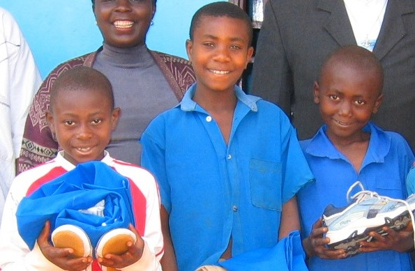

Geen ouders,
toch naar school?
Bali is een klein stadje in het Engelsprekende westelijk deel van het
West-Afrikaanse Kameroen. Ook daar zijn tegenwoordig, helaas, wezen te
vinden, van wie ouders aan aids zijn overladen. Zoals vaak treft
Wat kunt U
hiermee?
De Stichting Ma-Flo is voor de ondersteuning van het werk van Ma-Flo afhankelijk van giften en schenkingen die, in samenwerking met het Ma-Flo support Committee in Bali, volledig bested worden aan de kosten van onderwijs voor aids-wezen. Per kind is een bedrag van rond 50euro per schooljaar nodig. Past het bij U om dit verre geode doel van dichtbij te ondersteunen? Met een e`enmalige gift of als donateur?
WAAR GAAT
HET OM?
Het gaat St. ‘Ma-Flo’ e om dat kinderen die wees zijn geworden naar
school kunnen blijven gaan en daardoor betere kansen voor de toekomst
hebben. Dit project in het verre Kameroen, wordt ondersteund in en rond
Rotterdam hier I Nederland.
Samen met een committee van leerkrachten en leden van ouderverenigingen in Bali worden de ingezamelde gelden geheel bested aan onderwijs kosten voor aids-wezen. School resultaten worden regelmatig gecheckt.
Eeen en ander zoals vermeld in de statuten.
De Stichting Ma-Flo beloont bestuursleden noch financieel,
noch materieel voor hun diensten overeenkomend met hun fucties in de
stichting.
2. Vrijwilligers
De Stichting Ma-Flo beloont vrijwillgers noch financieel,
noch materieel voor hun diensten overeenkomend met hun fucties in de
stichting.
3. Kosten gemaakt voor de Stichting Ma-Flo
Bestuursleden en vrijwilligers mogen een declaratie
indienen voor vergoeding van kosten gemaakt voor de Stichting, b.v.
materialen, porto kosten, verzending van goederen e.d. wanneer dit
tevoren is overeengekomen met de Voorzitter, Secretaris of
Penningmeester van de Stichting.
Dit beleid is overeengekomen door het bestuur op ........
en geldig tot herroeping.